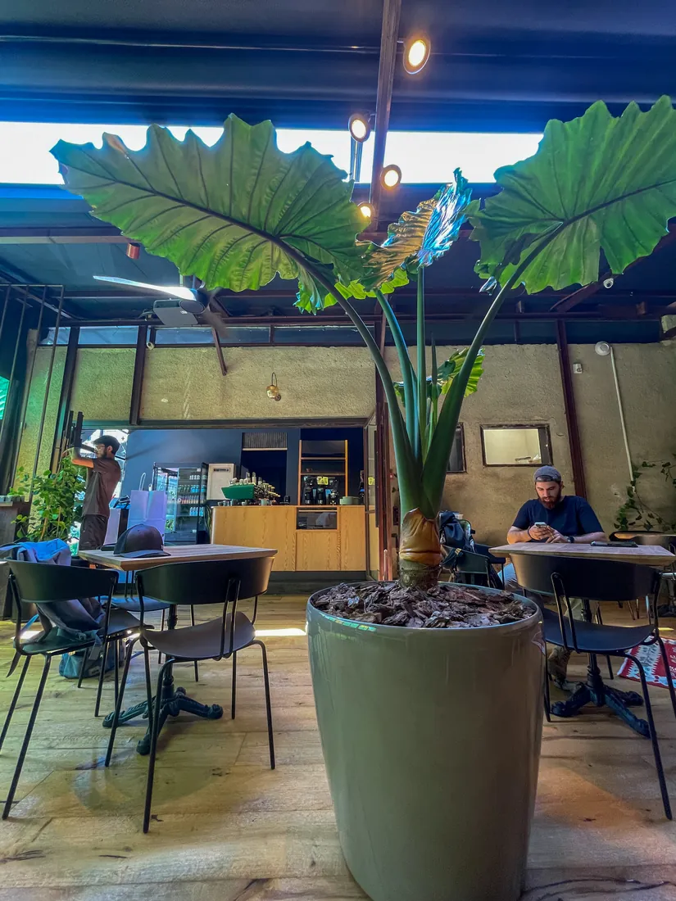
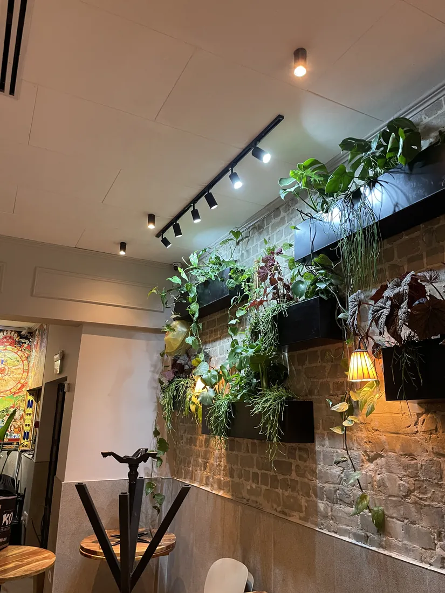
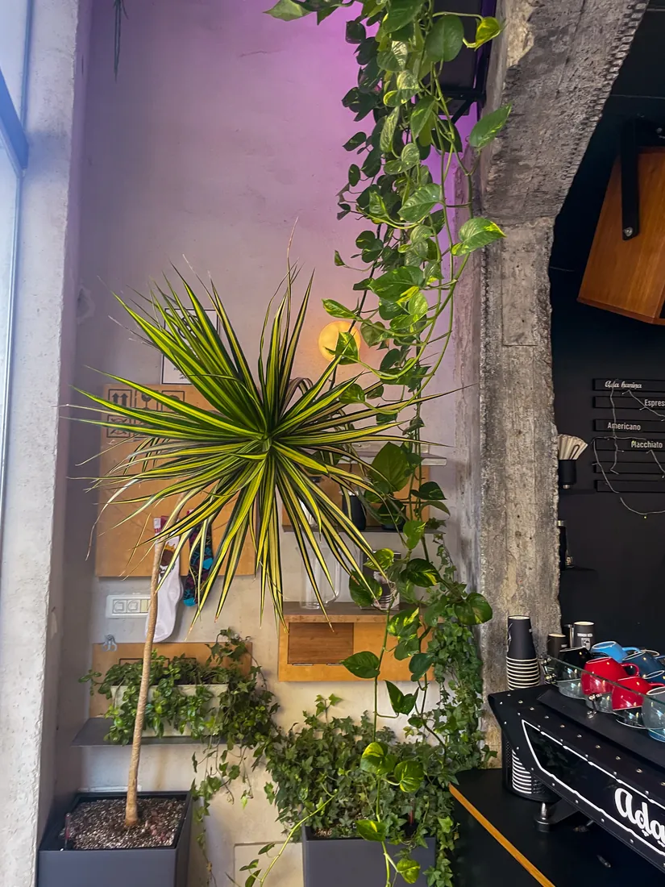
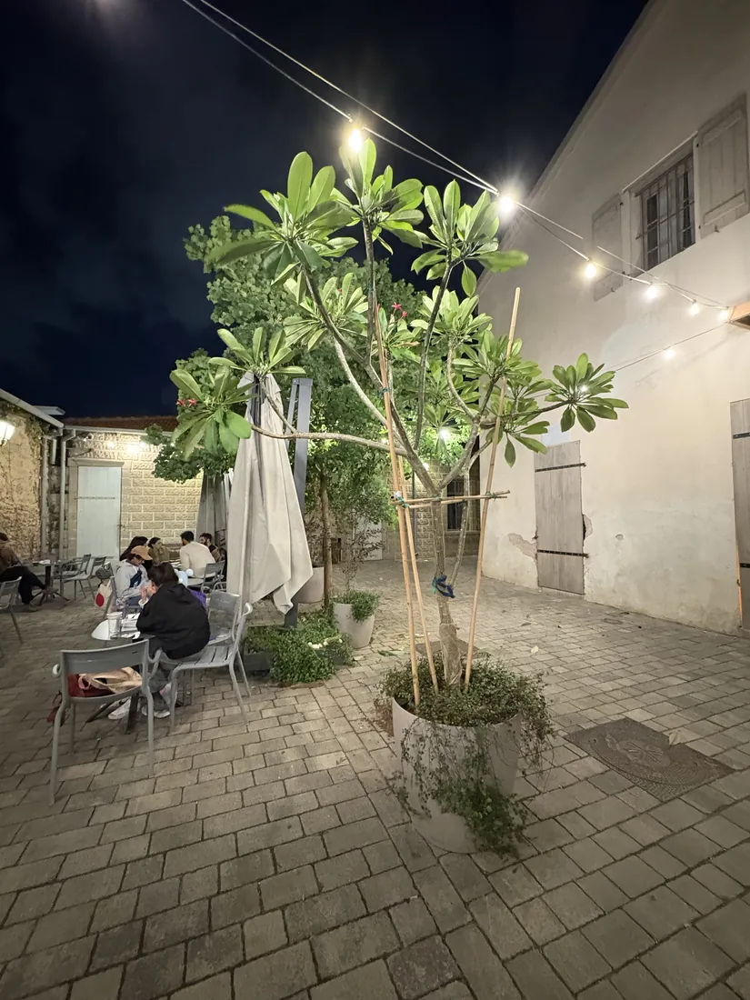
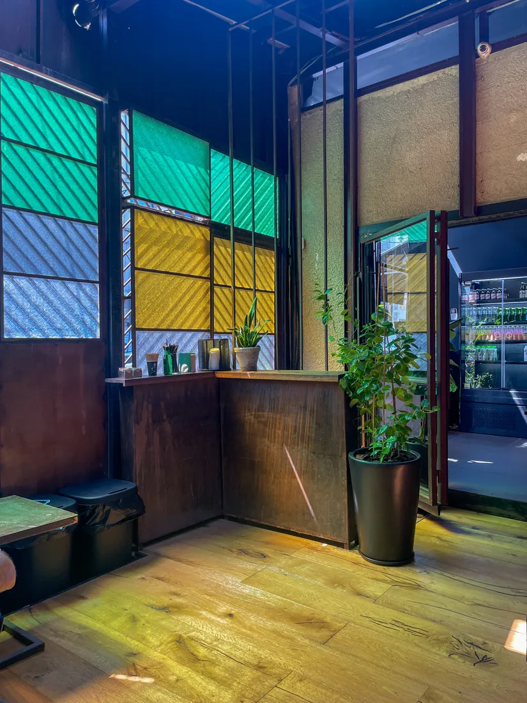
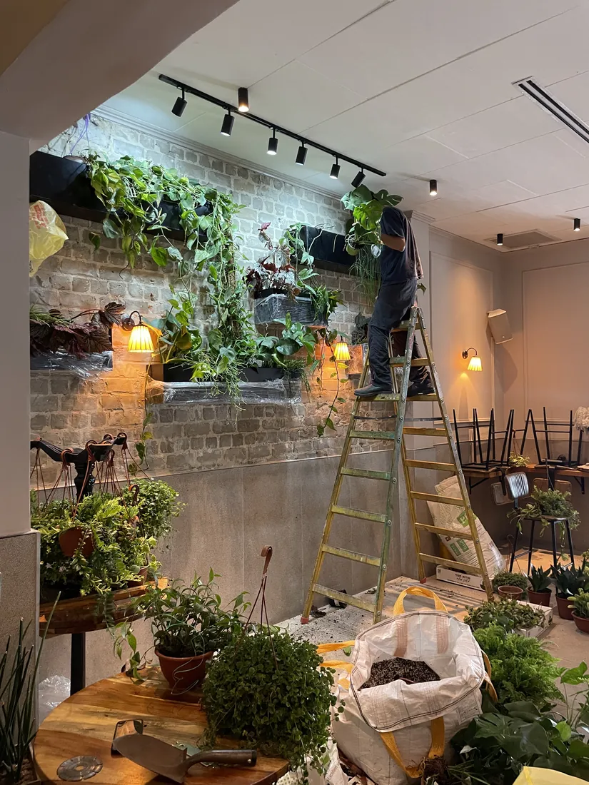
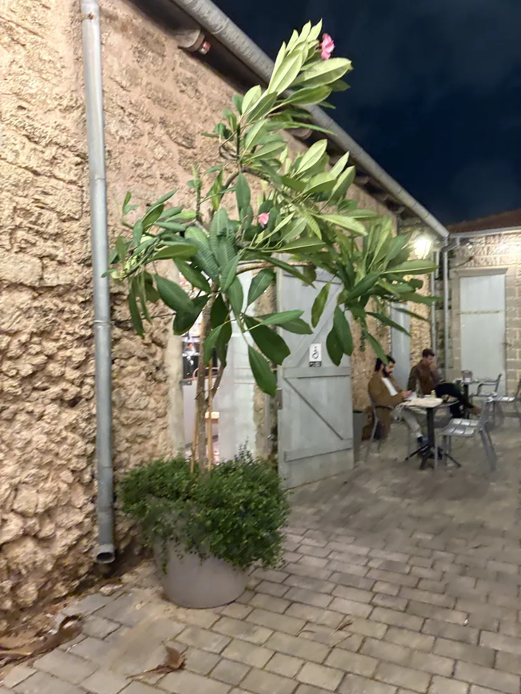
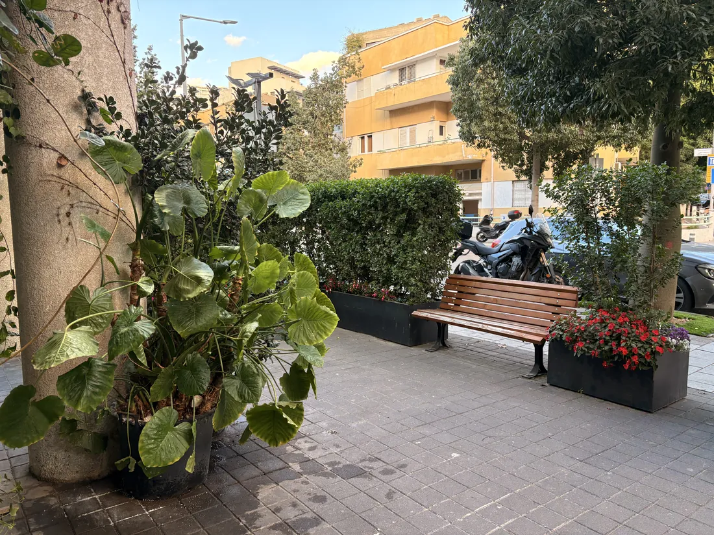

מסעדה, בית קפה, חנות או קליניקה. גן פרא מתכננת ומקימה צמחייה שהופכת עסק למקום שנעים לשבת בו, ושלקוחות חוזרים אליו.
שלחו הודעה עכשיושיחת אפיון · ללא התחייבות
מסעדה, בית קפה, חנות, קליניקה. יש לנו פתרון לכל מצב ותקציב
האווירה שגורמת ללקוחות להישאר עוד קפה, ולחזור שוב מחר
חלון ראווה ירוק שעוצר אנשים ברחוב ומכניס אותם פנימה
סביבה מרגיעה שמורידה מתח למטופלים ולצוות כבר מהכניסה
חבילת ביקורים חודשית. הגינה תמיד נראית מקצועית, בלי שתחשבו על זה
הפרויקטים שלנו
קפה אדא · מסעדת לווינסקי · קפה נחת · חנות מייקי ועוד








עבדנו עם מסעדות, בתי קפה, חנויות וקליניקות. מכירים את האתגרים
לא מפריעים לפעילות. מגיעים לפני הפתיחה, בערב או בסוף שבוע
כל תשלום עם חשבונית מס מלאה. רשמי, לניכוי מס, ללא הפתעות
בוחרים צמחים שמתאימים לתאורה ולתנאי העסק. לא סתם נוי
תכנון, רכש, הקמה, תחזוקה. אתם לא מתעסקים עם ספקים שונים
5+ שנות ניסיון, 5 כוכבים ב-Google. לא מתחילים לנסות אצלכם
גינות לעסקים בתל אביב וגוש דן: גן פרא מתכננת ומקימה צמחייה למסעדות, בתי קפה, חנויות, קליניקות ומרחבים מסחריים. לקוח שיושב בסביבה ירוקה נשאר יותר זמן, ונוטה לחזור. אנחנו בוחרים צמחים שנראים טוב לאורך זמן וקלים לתחזוקה, כדי שהעסק יישאר מטופח בלי מאמץ.
חשוב לדעת: גינה לעסק היא הוצאה מוכרת. עיצוב הגינה ושירות תחזוקה שוטף מוכרים כהוצאה עסקית. שמרו את החשבוניות ואשרו מול רואה החשבון שלכם.
בואו נדבר
שלחו הודעה, נחזור אליכם תוך שעה. נבין מה אתם צריכים ונגיע עם הצעה מותאמת
שלחו הודעה עכשיושיחת אפיון · ללא התחייבות · עונים בהקדם